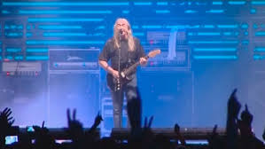
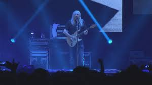
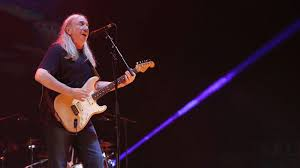
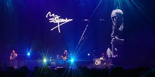
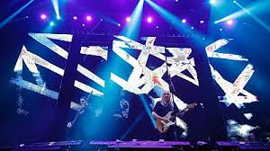
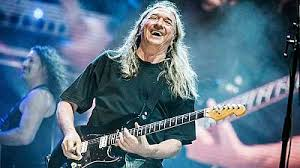

Concierto en Madrid
21 de diciembre de 2018 — WiZink Center
Detalles del evento
| Concepto | Información |
|---|---|
| Aforo | 15.000 personas |
| Precio de las entradas | 35 € |
| Fecha y hora del concierto |

Crónica
Tras 45 años encima de los escenarios representando el rock madrileño, Rosendo ofreció su concierto en la capital el viernes 21 de diciembre de 2018. El evento tuvo lugar en el WiZink Center, donde el artista hizo las delicias de las 15.000 personas que llenaron el recinto hasta la bandera.
El regreso a casa fue como un ritual de cierre perfecto. Madrid, cuna de su historia y de tantas
batallas musicales, recibió a Rosendo para un concierto gigantesco que fue pura celebración.
Este show formaba parte de la gira de despedida Mi tiempo, señorías…
, que había arrancado
en marzo y que culminaría al día siguiente en Barcelona.
A sus 64 años, Rosendo decidió dejar los escenarios grandes para no consumirse
, aunque
dejó claro que el rock seguiría siendo parte de su vida de otras maneras. El músico salió al escenario
acompañado por Rafa J. Vegas al bajo y Mariano Montero a la batería,
su formación más fiel durante las últimas décadas.

La noche fue un repaso exhaustivo por toda su carrera: desde los tiempos de Leño
con temas como Maneras de vivir
y El porqué de tus silencios
, hasta sus grandes clásicos
en solitario como Flojos de pantalón
, Loco por incordiar
, Pan de higo
y
Agradecido
.
El público madrileño, que había crecido con su música, le dedicó una ovación interminable tras cada tema. Fueron dos horas de fiesta, lava y agradecimiento puro: décadas de carretera condensadas en un set que quemó escenarios y retinas.
He recibido mucho cariño, y me duele tener que parar, pero nos hacemos viejos
, afirmó
Rosendo visiblemente emocionado desde el escenario. Sin embargo, la noche no fue triste: fue una
reafirmación de por qué Rosendo es leyenda viva del rock español.
Madrid despidió a su hijo pródigo con el respeto y el cariño que merece alguien que nunca vendió su alma, que siempre fue fiel a sí mismo y que representó como nadie el rock urbano de Carabanchel y de todas las barriadas de España.
Ubicación
Galería del concierto






"A mi manera, pero agradecido." — Rosendo Mercado